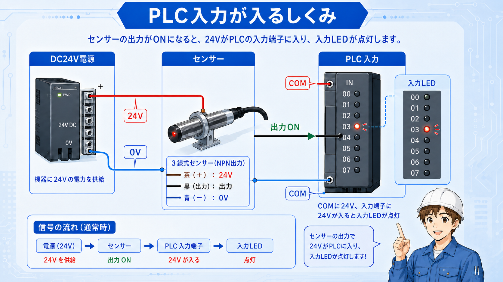
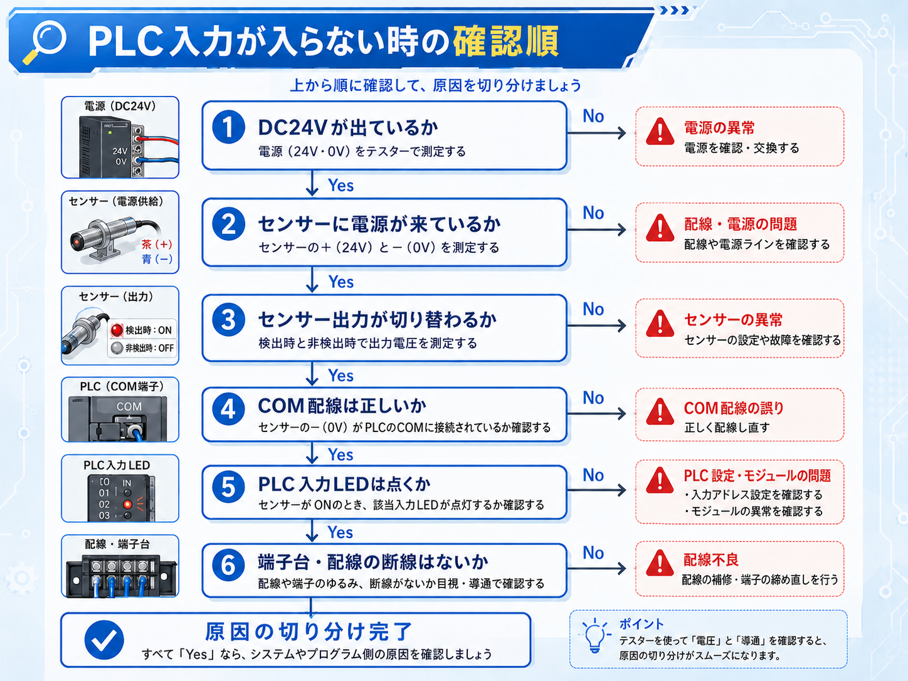
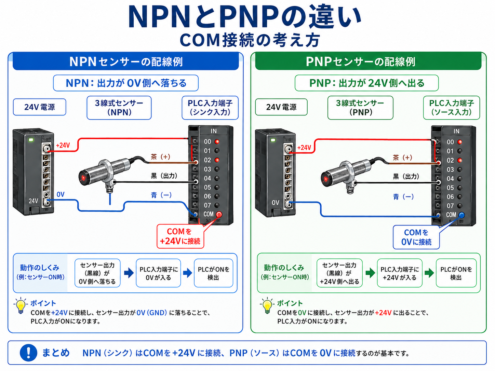

PLC入力は「センサーがON」だけでは決まらない
PLC入力が入らない時、最初に見たくなるのはPLC本体の入力LEDです。ただ、実際にはその前に DC24V電源、0V、COM、センサー出力、入力ユニット がつながっていて、どこか1か所が合っていないだけでも入力は入りません。
つまり「センサーが反応しているか」と「PLCに入力として届いているか」は、分けて考える必要があります。

まず分けて考える
センサー側でONしているか、PLC入力端子まで電圧が来ているか、PLC入力LEDが点いているか。この3つを分けて見ると原因を追いやすくなります。

後輩センサーのランプは点いているのに、PLC側の入力が入りません。センサーは悪くないって考えていいですか？

先輩センサーランプは「センサーが検出した」表示で、PLC入力まで信号が届いた証拠ではないよ。端子台、COM、入力方式まで順番に見よう。
入力信号の流れをざっくり見る
PLC入力は、ざっくり言うと「電源からセンサーを通り、PLC入力ユニットへ信号が届く」流れです。 ただし、NPN入力かPNP入力か、入力COMをどちらに接続するかで、電圧の見え方が変わります。

| 見る場所 | 確認すること | よくある状態 |
|---|---|---|
| DC24V電源 | 24Vと0Vが出ているか | 電源OFF、ヒューズ切れ、電圧降下 |
| センサー | 検出ランプが点くか、出力線が変化するか | ランプは点くが出力線がPLCへ届いていない |
| COM | 入力ユニットのCOM接続が方式と合っているか | NPN/PNPの考え方が合っていない |
| PLC入力LED | 対象入力番号のLEDが点くか | 端子番号違い、アドレス違い、配線先違い |
PLC入力LEDだけで判断しない
PLC入力LEDが消えている時は、プログラムより先に、電源・COM・端子番号・センサー出力を確認した方が早い場面が多いです。
症状別に見ると原因を絞りやすい
入力が入らないと言っても、症状はいくつかに分かれます。センサーランプが点くのか、PLC入力LEDが点くのか、モニタ上の入力がONするのかを分けて確認します。

| 症状 | 考えやすい原因 | 最初に見る場所 |
|---|---|---|
| センサーランプも点かない | 電源なし、センサー不良、検出距離・対象物の問題 | DC24V、0V、センサー本体 |
| センサーランプは点くがPLC LEDが点かない | 出力線断線、COM違い、NPN/PNP違い、端子番号違い | 出力線、COM、入力端子 |
| PLC LEDは点くが画面上でONしない | アドレス違い、見ているデバイス違い、プログラム条件違い | 入力番号、PLCモニタ、ラダー |
| たまにしか入らない | 接触不良、配線ゆるみ、電圧降下、検出位置のズレ | 端子の締付、電圧、センサー位置 |
現場では「どこまでは来ているか」を見る
原因探しは、悪い部品を決めつけるよりも、信号がどこまで届いているかを順番に追う方が安全です。
PLC入力が入らない時の確認手順
初心者のうちは、あちこち同時に見るより、順番を固定した方が迷いにくいです。ここでは、現場で使いやすい基本の確認順に整理します。
1. DC24V電源を確認する
まず24Vと0Vが正常に出ているかを確認します。電源が不安定だと、センサーもPLC入力も正しく動きません。
2. センサー本体の反応を見る
検出ランプが点くか、対象物との距離が合っているか、センサーの向きや汚れがないかを見ます。
3. センサー出力線を測る
検出時に出力線の電圧が変化するかを確認します。ランプ点灯だけで判断しないのがポイントです。
4. COMと入力方式を確認する
NPN/PNPやシンク/ソースの考え方が合っていないと、配線がつながっていても入力が入りません。
5. PLC入力端子番号を見る
実際に配線されている端子番号と、図面・ラダーで見ている入力番号が一致しているかを確認します。
6. PLC入力LEDとモニタを確認する
入力LEDが点くか、PLCモニタ上で対象デバイスがONするかを確認し、配線側かプログラム側かを切り分けます。
通電中の確認は無理をしない
電圧測定や端子確認は、短絡や感電、設備の急な動作に注意が必要です。不安な場合は必ず経験者と一緒に確認してください。
よくある原因と見落としポイント
PLC入力が入らない原因は、センサー故障だけではありません。実際には、配線先、COM、図面の読み違い、入力番号違いのような基本部分で止まっていることも多いです。
センサーランプだけ見て判断している
センサーランプが点いていても、PLC入力まで信号が届いているとは限りません。センサー出力線、端子台、PLC入力端子まで順番に確認します。
COMの考え方が合っていない
入力ユニットのCOMが24V側なのか0V側なのか、使用しているセンサー方式と合っているかを確認します。NPN/PNPの違いは初心者がつまずきやすい部分です。
見ている入力番号が違う
配線図ではX10、実際の端子はX11、ラダーで見ているのはX12のように、図面・配線・プログラムの入力番号がずれている場合があります。
端子のゆるみや断線
たまに入る、振動で入ったり切れたりする場合は、端子の締付、断線しかけ、コネクタの差し込み不足も確認します。
後輩入力が入らない時って、すぐセンサー交換を考えがちでした。
先輩交換前に、電源、COM、出力線、入力LEDを見よう。原因が配線や設定なら、部品を替えても直らないからね。
現場での見方のコツ
PLC入力トラブルでは、いきなりラダーを深く追うよりも、まず入力LEDと現物の動きを合わせて見ると整理しやすいです。
現物の動きと入力LEDを同時に見る
センサーにワークを近づけた時、センサーランプとPLC入力LEDがどう変わるかを一緒に見ます。
図面の端子番号を追う
センサー線が端子台のどこに入り、PLCのどの入力へ行くかを図面と現物で照合します。
入力方式を決めつけない
同じDC24V入力でも、ユニットや配線の考え方が違う場合があります。COMの接続を必ず確認します。
最後にプログラム側を見る
PLC入力LEDが点いているのに動作しない場合は、ラダー条件、インターロック、デバイス番号を確認します。
「入力LEDが点くか」で大きく分ける
入力LEDが点かないなら配線・電源・COM側、入力LEDが点くならアドレス・ラダー・条件側、と大きく切り分けると迷いにくくなります。